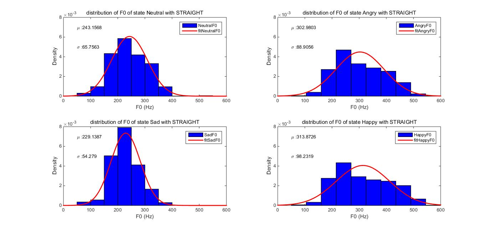
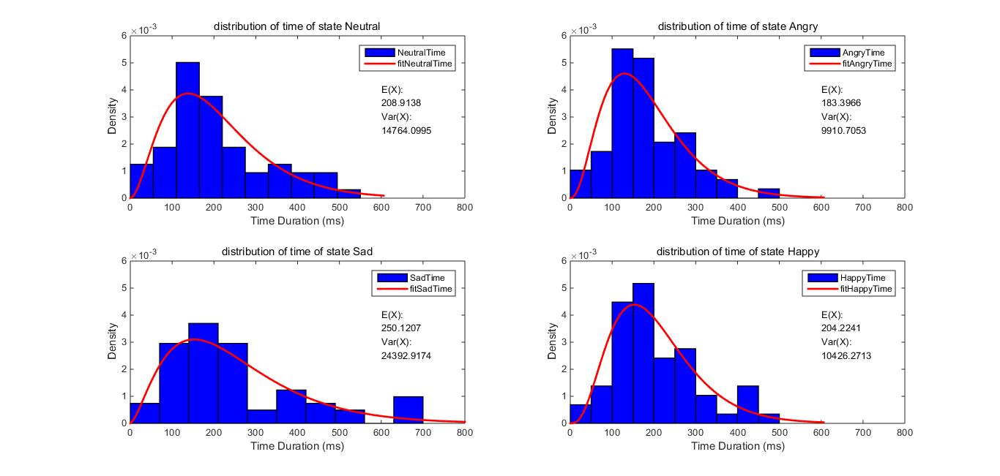
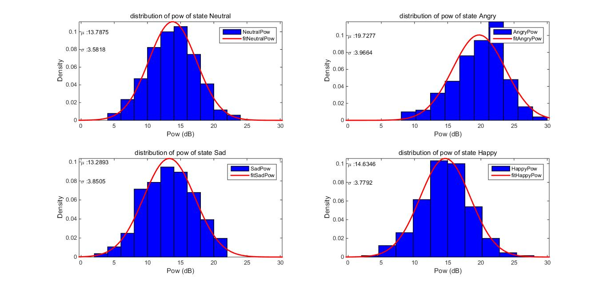

Emotional Speech Analysis Thesis Project
Copyright jhdu @ Information Engineering department, School of Electronics and Information Engineering, Soochow University. All rights reserved.
Contents
File path set and initialization
designate the destination of the path of training set
clear;clc; filePath = 'F:\Working_stuff\毕设\情感语音\情感语音'; filePathAngry = strcat(filePath, '\生气\'); filePathHappy = strcat(filePath, '\高兴\'); filePathNeutral = strcat(filePath, '\中性\'); filePathSad = strcat(filePath, '\悲伤\'); addpath(filePathAngry, filePathHappy, filePathNeutral, filePathSad); % parameter settings for feature extration defaultparams; f0floor = 50; f0ceil = 500; % version check ver_chk = version; ver_chk = str2double(ver_chk(1:3));
Training Serial Version
F0 time and power calculation raw, still remain to be processed
infoAngry = cell(50,1); infoHappy = cell(50,1); infoNeutral = cell(50,1); infoSad = cell(50,1); for i = 201:250 % Angry information fileAngryTemp = strcat(filePathAngry, int2str(i), '.wav'); [audioAngry, fs] = audioread(fileAngryTemp); [f0raw, vuv, auxouts] = MulticueF0v14(audioAngry, fs, f0floor, f0ceil); infoAngry{i-200}.f0raw = f0raw; infoAngry{i-200}.vuv = vuv; infoAngry{i-200}.pow = auxouts.InstantaneousPower; % Happy information fileHappyTemp = strcat(filePathHappy, int2str(i), '.wav'); [audioHappy, fs] = audioread(fileHappyTemp); [f0raw, vuv, auxouts] = MulticueF0v14(audioHappy, fs, f0floor, f0ceil); infoHappy{i-200}.f0raw = f0raw; infoHappy{i-200}.vuv = vuv; infoHappy{i-200}.pow = auxouts.InstantaneousPower; % Neutral information fileNeutralTemp = strcat(filePathNeutral, int2str(i), '.wav'); [audioNeutral, fs] = audioread(fileNeutralTemp); [f0raw, vuv, auxouts] = MulticueF0v14(audioNeutral, fs, f0floor, f0ceil); infoNeutral{i-200}.f0raw = f0raw; infoNeutral{i-200}.vuv = vuv; infoNeutral{i-200}.pow = auxouts.InstantaneousPower; % Sad information fileSadTemp = strcat(filePathSad, int2str(i), '.wav'); [audioSad, fs] = audioread(fileSadTemp); [f0raw, vuv, auxouts] = MulticueF0v14(audioSad, fs, f0floor, f0ceil); infoSad{i-200}.f0raw = f0raw; infoSad{i-200}.vuv = vuv; infoSad{i-200}.pow = auxouts.InstantaneousPower; end % save workspace for other use save infoAngry.mat infoAngry; save infoHappy.mat infoHappy; save infoNeutral.mat infoNeutral; save infoSad.mat infoSad;
Missing dominant segment that is centered at:1016 (ms) segment (997:1042) is isolated. Missing dominant segment that is centered at:479 (ms) segment (460:512) is isolated. Missing dominant segment that is centered at:1253 (ms) segment (1240:1264) is isolated. Missing dominant segment that is centered at:1025 (ms) segment (1006:1041) is isolated. Missing dominant segment that is centered at:1592 (ms) segment (1569:1605) is isolated. Missing dominant segment that is centered at:369 (ms) segment (339:384) is isolated. Missing dominant segment that is centered at:167 (ms) segment (141:199) is isolated. Missing dominant segment that is centered at:951 (ms) segment (928:967) is isolated. Missing dominant segment that is centered at:566 (ms) segment (540:592) is isolated. Missing dominant segment that is centered at:815 (ms) segment (779:855) is isolated. Missing dominant segment that is centered at:856 (ms) segment (826:871) is isolated. Missing dominant segment that is centered at:224 (ms) segment (192:279) is isolated. Missing dominant segment that is centered at:1291 (ms) segment (1267:1327) is isolated. Missing dominant segment that is centered at:1172 (ms) segment (1148:1213) is isolated. Missing dominant segment that is centered at:831 (ms) segment (797:840) is isolated. Discontinuity in (429:495), Max jump=0.7889273 oct. Missing dominant segment that is centered at:467 (ms) segment (451:475) is isolated. Missing dominant segment that is centered at:395 (ms) segment (368:460) is isolated. Missing dominant segment that is centered at:1238 (ms) segment (1235:1284) is isolated. Missing dominant segment that is centered at:544 (ms) segment (519:584) is isolated. Missing dominant segment that is centered at:1171 (ms) segment (1149:1203) is isolated. Missing dominant segment that is centered at:1074 (ms) segment (1063:1086) is isolated. Missing dominant segment that is centered at:546 (ms) segment (515:596) is isolated. Missing dominant segment that is centered at:1240 (ms) segment (1191:1256) is isolated. Missing dominant segment that is centered at:459 (ms) segment (432:482) is isolated. Missing dominant segment that is centered at:245 (ms) segment (207:297) is isolated. Missing dominant segment that is centered at:671 (ms) segment (645:714) is isolated. Missing dominant segment that is centered at:601 (ms) segment (597:617) is isolated. Missing dominant segment that is centered at:1079 (ms) segment (1047:1152) is isolated. Discontinuity in (1021:1161), Max jump=2.750036 oct. Missing dominant segment that is centered at:619 (ms) segment (597:654) is isolated. Missing dominant segment that is centered at:1219 (ms) segment (1206:1231) is isolated. Missing dominant segment that is centered at:1035 (ms) segment (1019:1040) is isolated. Missing dominant segment that is centered at:590 (ms) segment (568:621) is isolated. Missing dominant segment that is centered at:1931 (ms) segment (1903:1967) is isolated. Missing dominant segment that is centered at:361 (ms) segment (326:384) is isolated. Missing dominant segment that is centered at:115 (ms) segment (89:133) is isolated. Missing dominant segment that is centered at:216 (ms) segment (186:259) is isolated. Missing dominant segment that is centered at:1278 (ms) segment (1255:1324) is isolated. Missing dominant segment that is centered at:1986 (ms) segment (1912:2049) is isolated. Missing dominant segment that is centered at:812 (ms) segment (778:828) is isolated. Missing dominant segment that is centered at:1077 (ms) segment (1050:1122) is isolated. Missing dominant segment that is centered at:1839 (ms) segment (1810:1880) is isolated. Missing dominant segment that is centered at:1145 (ms) segment (1103:1223) is isolated.
Training parallel version
F0 time and power calculation raw, still remain to be processed
infoAngry = cell(50,1); infoHappy = cell(50,1); infoNeutral = cell(50,1); infoSad = cell(50,1); parfor i = 201:250 % Angry information fileAngryTemp = strcat(filePathAngry, int2str(i), '.wav'); [audioAngry, fs] = audioread(fileAngryTemp); [f0rawA, vuvA, auxoutsA] = MulticueF0v14(audioAngry, fs, f0floor, f0ceil); infoAngry{i-200}.f0raw = f0rawA; infoAngry{i-200}.vuv = vuvA; infoAngry{i-200}.pow = auxoutsA.InstantaneousPower; % Happy information fileHappyTemp = strcat(filePathHappy, int2str(i), '.wav'); [audioHappy, fs] = audioread(fileHappyTemp); [f0rawH, vuvH, auxoutsH] = MulticueF0v14(audioHappy, fs, f0floor, f0ceil); infoHappy{i-200}.f0raw = f0rawH; infoHappy{i-200}.vuv = vuvH; infoHappy{i-200}.pow = auxoutsH.InstantaneousPower; % Neutral information fileNeutralTemp = strcat(filePathNeutral, int2str(i), '.wav'); [audioNeutral, fs] = audioread(fileNeutralTemp); [f0rawN, vuvN, auxoutsN] = MulticueF0v14(audioNeutral, fs, f0floor, f0ceil); infoNeutral{i-200}.f0raw = f0rawN; infoNeutral{i-200}.vuv = vuvN; infoNeutral{i-200}.pow = auxoutsN.InstantaneousPower; % Sad information fileSadTemp = strcat(filePathSad, int2str(i), '.wav'); [audioSad, fs] = audioread(fileSadTemp); [f0rawS, vuvS, auxoutsS] = MulticueF0v14(audioSad, fs, f0floor, f0ceil); infoSad{i-200}.f0raw = f0rawS; infoSad{i-200}.vuv = vuvS; infoSad{i-200}.pow = auxoutsS.InstantaneousPower; end % save workspace for other use save infoAngry_parallel.mat infoAngry; save infoHappy_parallel.mat infoHappy; save infoNeutral_parallel.mat infoNeutral; save infoSad_parallel.mat infoSad;
Starting parallel pool (parpool) using the 'local' profile ... connected to 2 workers. Missing dominant segment that is centered at:856 (ms) Discontinuity in (1021:1161), Max jump=2.750036 oct. segment (826:871) is isolated. Missing dominant segment that is centered at:566 (ms) Missing dominant segment that is centered at:619 (ms) segment (597:654) is isolated. Missing dominant segment that is centered at:1219 (ms) segment (1206:1231) is isolated. Missing dominant segment that is centered at:1035 (ms) segment (540:592) is isolated. Missing dominant segment that is centered at:815 (ms) segment (1019:1040) is isolated. Missing dominant segment that is centered at:590 (ms) segment (568:621) is isolated. Missing dominant segment that is centered at:671 (ms) segment (645:714) is isolated. Missing dominant segment that is centered at:601 (ms) segment (597:617) is isolated. Missing dominant segment that is centered at:1079 (ms) segment (1047:1152) is isolated. Missing dominant segment that is centered at:245 (ms) segment (207:297) is isolated. Missing dominant segment that is centered at:459 (ms) segment (779:855) is isolated. Missing dominant segment that is centered at:951 (ms) segment (928:967) is isolated. Missing dominant segment that is centered at:369 (ms) segment (339:384) is isolated. Missing dominant segment that is centered at:167 (ms) segment (432:482) is isolated. Missing dominant segment that is centered at:1240 (ms) segment (141:199) is isolated. Missing dominant segment that is centered at:1025 (ms) segment (1006:1041) is isolated. Missing dominant segment that is centered at:1592 (ms) segment (1191:1256) is isolated. Missing dominant segment that is centered at:546 (ms) segment (515:596) is isolated. Missing dominant segment that is centered at:1171 (ms) segment (1149:1203) is isolated. Missing dominant segment that is centered at:1074 (ms) segment (1063:1086) is isolated. Missing dominant segment that is centered at:831 (ms) segment (797:840) is isolated. Discontinuity in (429:495), Max jump=0.7889269 oct. segment (1569:1605) is isolated. Missing dominant segment that is centered at:1016 (ms) Missing dominant segment that is centered at:467 (ms) segment (451:475) is isolated. Missing dominant segment that is centered at:395 (ms) segment (997:1042) is isolated. Missing dominant segment that is centered at:479 (ms) segment (368:460) is isolated. Missing dominant segment that is centered at:1238 (ms) segment (1235:1284) is isolated. Missing dominant segment that is centered at:544 (ms) segment (460:512) is isolated. Missing dominant segment that is centered at:1253 (ms) segment (519:584) is isolated. Missing dominant segment that is centered at:1172 (ms) segment (1240:1264) is isolated. segment (1148:1213) is isolated. Missing dominant segment that is centered at:1291 (ms) Missing dominant segment that is centered at:1839 (ms) segment (1267:1327) is isolated. Missing dominant segment that is centered at:224 (ms) segment (192:279) is isolated. segment (1810:1880) is isolated. Missing dominant segment that is centered at:812 (ms) Missing dominant segment that is centered at:1145 (ms) segment (778:828) is isolated. Missing dominant segment that is centered at:1077 (ms) segment (1050:1122) is isolated. Missing dominant segment that is centered at:1278 (ms) segment (1103:1223) is isolated. segment (1255:1324) is isolated. Missing dominant segment that is centered at:1986 (ms) segment (1912:2049) is isolated. Missing dominant segment that is centered at:361 (ms) segment (326:384) is isolated. Missing dominant segment that is centered at:115 (ms) segment (89:133) is isolated. Missing dominant segment that is centered at:216 (ms) segment (186:259) is isolated. Missing dominant segment that is centered at:1931 (ms) segment (1903:1967) is isolated.
data purifying
process data into desired ones
% restore workspace clear;clc; load('infoAngry.mat'); load('infoHappy.mat'); load('infoNeutral.mat'); load('infoSad.mat'); % Angry purifiedAngry.F0 = []; purifiedAngry.Time = []; purifiedAngry.Pow = []; for i= 1:50 purifiedF0 = infoAngry{i}.f0raw .* infoAngry{i}.vuv; purifiedF0 = purifiedF0(purifiedF0 ~= 0); purifiedAngry.F0 = [ purifiedAngry.F0; purifiedF0 ]; [idx, purifiedTime,~] = time_calc(infoAngry{i}.vuv); purifiedAngry.Time = [purifiedAngry.Time; purifiedTime]; for j = 1:length(idx) purifiedPow = sum(infoAngry{i}.pow(idx(j) : idx(j) + purifiedTime(j) - 1) ) / purifiedTime(j); purifiedAngry.Pow = [purifiedAngry.Pow; purifiedPow]; end end % Happy purifiedHappy.F0 = []; purifiedHappy.Time = []; purifiedHappy.Pow = []; for i= 1:50 purifiedF0 = infoHappy{i}.f0raw .* infoHappy{i}.vuv; purifiedF0 = purifiedF0(purifiedF0 ~= 0); purifiedHappy.F0 = [ purifiedHappy.F0; purifiedF0 ]; [idx, purifiedTime,~] = time_calc(infoHappy{i}.vuv); purifiedHappy.Time = [purifiedHappy.Time; purifiedTime]; for j = 1:length(idx) purifiedPow = sum(infoHappy{i}.pow(idx(j) : idx(j) + purifiedTime(j) - 1) ) / purifiedTime(j); purifiedHappy.Pow = [purifiedHappy.Pow; purifiedPow]; end end % Neutral purifiedNeutral.F0 = []; purifiedNeutral.Time = []; purifiedNeutral.Pow = []; for i= 1:50 purifiedF0 = infoNeutral{i}.f0raw .* infoNeutral{i}.vuv; purifiedF0 = purifiedF0(purifiedF0 ~= 0); purifiedNeutral.F0 = [ purifiedNeutral.F0; purifiedF0 ]; [idx, purifiedTime, ~] = time_calc(infoNeutral{i}.vuv); purifiedNeutral.Time = [purifiedNeutral.Time; purifiedTime]; for j = 1:length(idx) purifiedPow = sum(infoNeutral{i}.pow(idx(j) : idx(j) + purifiedTime(j) - 1) ) / purifiedTime(j); purifiedNeutral.Pow = [purifiedNeutral.Pow; purifiedPow]; end end % Sad purifiedSad.F0 = []; purifiedSad.Time = []; purifiedSad.Pow = []; for i= 1:50 purifiedF0 = infoSad{i}.f0raw .* infoSad{i}.vuv; purifiedF0 = purifiedF0(purifiedF0 ~= 0); purifiedSad.F0 = [ purifiedSad.F0; purifiedF0 ]; [idx, purifiedTime, ~] = time_calc(infoSad{i}.vuv); purifiedSad.Time = [purifiedSad.Time; purifiedTime]; for j = 1:length(idx) purifiedPow = sum(infoSad{i}.pow(idx(j) : idx(j) + purifiedTime(j) - 1) ) / purifiedTime(j); purifiedSad.Pow = [purifiedSad.Pow; purifiedPow]; end end % save workspace for other use save purifiedAngry.mat purifiedAngry save purifiedSad.mat purifiedSad save purifiedNeutral.mat purifiedNeutral save purifiedHappy.mat purifiedHappy
Plot
draw the distributions of each state
clear;clc; load purifiedAngry.mat; load purifiedHappy.mat load purifiedNeutral.mat load purifiedSad.mat %============================================================================================================================% %============================================================================================================================% % distribution of F0 figure; % F0 of Neutral subplot(2,2,1); title('distribution of F0 of state Neutral with STRAIGHT'); hold on; LegHandles = []; LegText = {}; % --- Plot data originally in dataset "purifiedNeutral.F0" [CdfF,CdfX] = ecdf(purifiedNeutral.F0,'Function','cdf'); % compute empirical cdf BinInfo.rule = 3; BinInfo.nbins = 10; [~,BinEdge] = internal.stats.histbins(purifiedNeutral.F0,[],[],BinInfo,CdfF,CdfX); [BinHeight,BinCenter] = ecdfhist(CdfF,CdfX,'edges',BinEdge); hLine = bar(BinCenter,BinHeight,'hist'); set(hLine,'FaceColor','blue','EdgeColor','black',... 'LineStyle','-', 'LineWidth',1); xlabel('F0 (Hz)'); ylabel('Density'); LegHandles(end+1) = hLine; LegText{end+1} = 'NeutralF0'; % Create grid where function will be computed XLim = get(gca,'XLim'); XLim = XLim + [-1 1] * 0.01 * diff(XLim); XGrid = linspace(XLim(1),XLim(2),100); % --- Create fit "fitNeutralF0" % Fit this distribution to get parameter values % To use parameter estimates from the original fit: pd1 = fitdist(purifiedNeutral.F0, 'normal'); histNeutral.F0.average = pd1.mean; histNeutral.F0.deviation = pd1.sigma; YPlot = pdf(pd1,XGrid); hLine = plot(XGrid,YPlot,'Color',[1 0 0],... 'LineStyle','-', 'LineWidth',2,... 'Marker','none', 'MarkerSize',6); LegHandles(end+1) = hLine; LegText{end+1} = 'fitNeutralF0'; str1 = strcat('\mu : ', num2str(histNeutral.F0.average)); text(50, 7e-3, str1); str2 = strcat('\sigma : ', num2str(histNeutral.F0.deviation)); text(50, 5e-3, str2); axis([0, 600, 0, 8e-3]); % Adjust figure box on; hold off; % Create legend from accumulated handles and labels hLegend = legend(LegHandles,LegText,'Orientation', 'vertical', 'FontSize', 9, 'Location', 'northeast'); set(hLegend,'Interpreter','none'); % legend off; % F0 of Sad subplot(2,2,3); title('distribution of F0 of state Sad with STRAIGHT'); hold on; LegHandles = []; LegText = {}; % --- Plot data originally in dataset "purifiedSad.F0" [CdfF,CdfX] = ecdf(purifiedSad.F0,'Function','cdf'); % compute empirical cdf BinInfo.rule = 3; BinInfo.nbins = 10; [~,BinEdge] = internal.stats.histbins(purifiedSad.F0,[],[],BinInfo,CdfF,CdfX); [BinHeight,BinCenter] = ecdfhist(CdfF,CdfX,'edges',BinEdge); hLine = bar(BinCenter,BinHeight,'hist'); set(hLine,'FaceColor','blue','EdgeColor','black',... 'LineStyle','-', 'LineWidth',1); xlabel('F0 (Hz)'); ylabel('Density'); LegHandles(end+1) = hLine; LegText{end+1} = 'SadF0'; % Create grid where function will be computed XLim = get(gca,'XLim'); XLim = XLim + [-1 1] * 0.01 * diff(XLim); XGrid = linspace(XLim(1),XLim(2),100); % --- Create fit "fitSadF0" % Fit this distribution to get parameter values % To use parameter estimates from the original fit: pd1 = fitdist(purifiedSad.F0, 'normal'); histSad.F0.average = pd1.mean; histSad.F0.deviation = pd1.sigma; YPlot = pdf(pd1,XGrid); hLine = plot(XGrid,YPlot,'Color',[1 0 0],... 'LineStyle','-', 'LineWidth',2,... 'Marker','none', 'MarkerSize',6); LegHandles(end+1) = hLine; LegText{end+1} = 'fitSadF0'; str1 = strcat('\mu : ', num2str(histSad.F0.average)); text(50, 7e-3, str1); str2 = strcat('\sigma : ', num2str(histSad.F0.deviation)); text(50, 5e-3, str2); axis([0, 600, 0, 8e-3]); % Adjust figure box on; hold off; % Create legend from accumulated handles and labels hLegend = legend(LegHandles,LegText,'Orientation', 'vertical', 'FontSize', 9, 'Location', 'northeast'); set(hLegend,'Interpreter','none'); % legend off; % F0 of Angry subplot(2,2,2); title('distribution of F0 of state Angry with STRAIGHT'); hold on; LegHandles = []; LegText = {}; % --- Plot data originally in dataset "purifiedAngry.F0" [CdfF,CdfX] = ecdf(purifiedAngry.F0,'Function','cdf'); % compute empirical cdf BinInfo.rule = 3; BinInfo.nbins = 10; [~,BinEdge] = internal.stats.histbins(purifiedAngry.F0,[],[],BinInfo,CdfF,CdfX); [BinHeight,BinCenter] = ecdfhist(CdfF,CdfX,'edges',BinEdge); hLine = bar(BinCenter,BinHeight,'hist'); set(hLine,'FaceColor','blue','EdgeColor','black',... 'LineStyle','-', 'LineWidth',1); xlabel('F0 (Hz)'); ylabel('Density'); LegHandles(end+1) = hLine; LegText{end+1} = 'AngryF0'; % Create grid where function will be computed XLim = get(gca,'XLim'); XLim = XLim + [-1 1] * 0.01 * diff(XLim); XGrid = linspace(XLim(1),XLim(2),100); % --- Create fit "fitAngryF0" % Fit this distribution to get parameter values % To use parameter estimates from the original fit: pd1 = fitdist(purifiedAngry.F0, 'normal'); histAngry.F0.average = pd1.mean; histAngry.F0.deviation = pd1.sigma; YPlot = pdf(pd1,XGrid); hLine = plot(XGrid,YPlot,'Color',[1 0 0],... 'LineStyle','-', 'LineWidth',2,... 'Marker','none', 'MarkerSize',6); LegHandles(end+1) = hLine; LegText{end+1} = 'fitAngryF0'; str1 = strcat('\mu : ', num2str(histAngry.F0.average)); text(50, 7e-3, str1); str2 = strcat('\sigma : ', num2str(histAngry.F0.deviation)); text(50, 5e-3, str2); axis([0, 600, 0, 8e-3]); % Adjust figure box on; hold off; % Create legend from accumulated handles and labels hLegend = legend(LegHandles,LegText,'Orientation', 'vertical', 'FontSize', 9, 'Location', 'northeast'); set(hLegend,'Interpreter','none'); % legend off; % F0 of Happy subplot(2,2,4); title('distribution of F0 of state Happy with STRAIGHT'); hold on; LegHandles = []; LegText = {}; % --- Plot data originally in dataset "purifiedHappy.F0" [CdfF,CdfX] = ecdf(purifiedHappy.F0,'Function','cdf'); % compute empirical cdf BinInfo.rule = 3; BinInfo.nbins = 10; [~,BinEdge] = internal.stats.histbins(purifiedHappy.F0,[],[],BinInfo,CdfF,CdfX); [BinHeight,BinCenter] = ecdfhist(CdfF,CdfX,'edges',BinEdge); hLine = bar(BinCenter,BinHeight,'hist'); set(hLine,'FaceColor','blue','EdgeColor','black',... 'LineStyle','-', 'LineWidth',1); xlabel('F0 (Hz)'); ylabel('Density'); LegHandles(end+1) = hLine; LegText{end+1} = 'HappyF0'; % Create grid where function will be computed XLim = get(gca,'XLim'); XLim = XLim + [-1 1] * 0.01 * diff(XLim); XGrid = linspace(XLim(1),XLim(2),100); % --- Create fit "fitHappyF0" % Fit this distribution to get parameter values % To use parameter estimates from the original fit: pd1 = fitdist(purifiedHappy.F0, 'normal'); histHappy.F0.average = pd1.mean; histHappy.F0.deviation = pd1.sigma; YPlot = pdf(pd1,XGrid); hLine = plot(XGrid,YPlot,'Color',[1 0 0],... 'LineStyle','-', 'LineWidth',2,... 'Marker','none', 'MarkerSize',6); LegHandles(end+1) = hLine; LegText{end+1} = 'fitHappyF0'; str1 = strcat('\mu : ', num2str(histHappy.F0.average)); text(50, 7e-3, str1); str2 = strcat('\sigma : ', num2str(histHappy.F0.deviation)); text(50, 5e-3, str2); axis([0, 600, 0, 8e-3]); % Adjust figure box on; hold off; % Create legend from accumulated handles and labels hLegend = legend(LegHandles,LegText,'Orientation', 'vertical', 'FontSize', 9, 'Location', 'northeast'); set(hLegend,'Interpreter','none'); % legend off; %============================================================================================================================% %============================================================================================================================% % distribution of Time figure; % Time of Neutral subplot(2,2,1); title('distribution of time of state Neutral'); hold on; LegHandles = []; LegText = {}; % --- Plot data originally in dataset "purifiedNeutral.Time" [CdfF,CdfX] = ecdf(purifiedNeutral.Time,'Function','cdf'); % compute empirical cdf BinInfo.rule = 3; BinInfo.nbins = 10; [~,BinEdge] = internal.stats.histbins(purifiedNeutral.Time,[],[],BinInfo,CdfF,CdfX); [BinHeight,BinCenter] = ecdfhist(CdfF,CdfX,'edges',BinEdge); hLine = bar(BinCenter,BinHeight,'hist'); set(hLine,'FaceColor','blue','EdgeColor','black',... 'LineStyle','-', 'LineWidth',1); xlabel('Time Duration (ms)'); ylabel('Density'); LegHandles(end+1) = hLine; LegText{end+1} = 'NeutralTime'; % Create grid where function will be computed XLim = get(gca,'XLim'); XLim = XLim + [-1 1] * 0.01 * diff(XLim); XGrid = linspace(XLim(1),XLim(2),100); % --- Create fit "fitNeutralTime" % Fit this distribution to get parameter values % To use parameter estimates from the original fit: pd1 = fitdist(purifiedNeutral.Time, 'gamma'); histNeutral.Time.Shape = pd1.a; histNeutral.Time.Scale = pd1.b; YPlot = pdf(pd1,XGrid); hLine = plot(XGrid,YPlot,'Color',[1 0 0],... 'LineStyle','-', 'LineWidth',2,... 'Marker','none', 'MarkerSize',6); LegHandles(end+1) = hLine; LegText{end+1} = 'fitNeutralTime'; str1 = 'E(X): '; str2 = 'Var(X): '; text(600, 4e-3, str1); text(600, 3.5e-3, num2str(histNeutral.Time.Shape * histNeutral.Time.Scale)); text(600, 3e-3, str2); text(600, 2.5e-3, num2str(histNeutral.Time.Shape * histNeutral.Time.Scale .^ 2)); axis([0, 800, 0, 6e-3]); % Adjust figure box on; hold off; % Create legend from accumulated handles and labels hLegend = legend(LegHandles,LegText,'Orientation', 'vertical', 'FontSize', 9, 'Location', 'northeast'); set(hLegend,'Interpreter','none'); % legend off; % Time of Sad subplot(2,2,3); title('distribution of time of state Sad'); hold on; LegHandles = []; LegText = {}; % --- Plot data originally in dataset "purifiedSad.Time" [CdfF,CdfX] = ecdf(purifiedSad.Time,'Function','cdf'); % compute empirical cdf BinInfo.rule = 3; BinInfo.nbins = 10; [~,BinEdge] = internal.stats.histbins(purifiedSad.Time,[],[],BinInfo,CdfF,CdfX); [BinHeight,BinCenter] = ecdfhist(CdfF,CdfX,'edges',BinEdge); hLine = bar(BinCenter,BinHeight,'hist'); set(hLine,'FaceColor','blue','EdgeColor','black',... 'LineStyle','-', 'LineWidth',1); xlabel('Time Duration (ms)'); ylabel('Density'); LegHandles(end+1) = hLine; LegText{end+1} = 'SadTime'; % Create grid where function will be computed XLim = get(gca,'XLim'); XLim = XLim + [-1 1] * 0.01 * diff(XLim); XGrid = linspace(XLim(1),XLim(2),100); % --- Create fit "fitSadTime" % Fit this distribution to get parameter values % To use parameter estimates from the original fit: pd1 = fitdist(purifiedSad.Time, 'gamma'); histSad.Time.Shape = pd1.a; histSad.Time.Scale = pd1.b; YPlot = pdf(pd1,XGrid); hLine = plot(XGrid,YPlot,'Color',[1 0 0],... 'LineStyle','-', 'LineWidth',2,... 'Marker','none', 'MarkerSize',6); % text('Scale Factor', pd1.b); % text('Shape Factor', pd1.a); LegHandles(end+1) = hLine; LegText{end+1} = 'fitSadTime'; text(600, 4e-3, str1); text(600, 3.5e-3, num2str(histSad.Time.Shape * histSad.Time.Scale)); text(600, 3e-3, str2); text(600, 2.5e-3, num2str(histSad.Time.Shape * histSad.Time.Scale .^ 2)); axis([0, 800, 0, 6e-3]); % Adjust figure box on; hold off; % Create legend from accumulated handles and labels hLegend = legend(LegHandles,LegText,'Orientation', 'vertical', 'FontSize', 9, 'Location', 'northeast'); set(hLegend,'Interpreter','none'); % Time of Angry subplot(2,2,2); title('distribution of time of state Angry'); hold on; LegHandles = []; LegText = {}; % --- Plot data originally in dataset "purifiedAngry.Time" [CdfF,CdfX] = ecdf(purifiedAngry.Time,'Function','cdf'); % compute empirical cdf BinInfo.rule = 3; BinInfo.nbins = 10; [~,BinEdge] = internal.stats.histbins(purifiedAngry.Time,[],[],BinInfo,CdfF,CdfX); [BinHeight,BinCenter] = ecdfhist(CdfF,CdfX,'edges',BinEdge); hLine = bar(BinCenter,BinHeight,'hist'); set(hLine,'FaceColor','blue','EdgeColor','black',... 'LineStyle','-', 'LineWidth',1); xlabel('Time Duration (ms)'); ylabel('Density'); LegHandles(end+1) = hLine; LegText{end+1} = 'AngryTime'; % Create grid where function will be computed XLim = get(gca,'XLim'); XLim = XLim + [-1 1] * 0.01 * diff(XLim); XGrid = linspace(XLim(1),XLim(2),100); % --- Create fit "fitAngryTime" % Fit this distribution to get parameter values % To use parameter estimates from the original fit: pd1 = fitdist(purifiedAngry.Time, 'gamma'); histAngry.Time.Shape = pd1.a; histAngry.Time.Scale = pd1.b; YPlot = pdf(pd1,XGrid); hLine = plot(XGrid,YPlot,'Color',[1 0 0],... 'LineStyle','-', 'LineWidth',2,... 'Marker','none', 'MarkerSize',6); LegHandles(end+1) = hLine; LegText{end+1} = 'fitAngryTime'; text(600, 4e-3, str1); text(600, 3.5e-3, num2str(histAngry.Time.Shape * histAngry.Time.Scale)); text(600, 3e-3, str2); text(600, 2.5e-3, num2str(histAngry.Time.Shape * histAngry.Time.Scale .^ 2)); axis([0, 800, 0, 6e-3]); % Adjust figure box on; hold off; % Create legend from accumulated handles and labels hLegend = legend(LegHandles,LegText,'Orientation', 'vertical', 'FontSize', 9, 'Location', 'northeast'); set(hLegend,'Interpreter','none'); % Time of Happy subplot(2,2,4); title('distribution of time of state Happy'); hold on; LegHandles = []; LegText = {}; % --- Plot data originally in dataset "purifiedHappy.Time" [CdfF,CdfX] = ecdf(purifiedHappy.Time,'Function','cdf'); % compute empirical cdf BinInfo.rule = 3; BinInfo.nbins = 10; [~,BinEdge] = internal.stats.histbins(purifiedHappy.Time,[],[],BinInfo,CdfF,CdfX); [BinHeight,BinCenter] = ecdfhist(CdfF,CdfX,'edges',BinEdge); hLine = bar(BinCenter,BinHeight,'hist'); set(hLine,'FaceColor','blue','EdgeColor','black',... 'LineStyle','-', 'LineWidth',1); xlabel('Time Duration (ms)'); ylabel('Density'); LegHandles(end+1) = hLine; LegText{end+1} = 'HappyTime'; % Create grid where function will be computed XLim = get(gca,'XLim'); XLim = XLim + [-1 1] * 0.01 * diff(XLim); XGrid = linspace(XLim(1),XLim(2),100); % --- Create fit "fitHappyTime" % Fit this distribution to get parameter values % To use parameter estimates from the original fit: pd1 = fitdist(purifiedHappy.Time, 'gamma'); histHappy.Time.Shape = pd1.a; histHappy.Time.Scale = pd1.b; YPlot = pdf(pd1,XGrid); hLine = plot(XGrid,YPlot,'Color',[1 0 0],... 'LineStyle','-', 'LineWidth',2,... 'Marker','none', 'MarkerSize',6); LegHandles(end+1) = hLine; LegText{end+1} = 'fitHappyTime'; text(600, 4e-3, str1); text(600, 3.5e-3, num2str(histHappy.Time.Shape * histHappy.Time.Scale)); text(600, 3e-3, str2); text(600, 2.5e-3, num2str(histHappy.Time.Shape * histHappy.Time.Scale .^ 2)); axis([0, 800, 0, 6e-3]); % Adjust figure box on; hold off; % Create legend from accumulated handles and labels hLegend = legend(LegHandles,LegText,'Orientation', 'vertical', 'FontSize', 9, 'Location', 'northeast'); set(hLegend,'Interpreter','none'); %============================================================================================================================% %============================================================================================================================% % distribution of Pow figure; % Preprocessing —— add 32dB amp for each group due to compensation of % instantaneous power threshold in defaultparams.m -- line 36 purifiedNeutral.Pow = ampxdB(purifiedNeutral.Pow, 40); purifiedSad.Pow = ampxdB(purifiedSad.Pow, 40); purifiedAngry.Pow = ampxdB(purifiedAngry.Pow, 40); purifiedHappy.Pow = ampxdB(purifiedHappy.Pow, 40); % Pow of Neutral subplot(2,2,1); title('distribution of pow of state Neutral'); hold on; LegHandles = []; LegText = {}; % --- Plot data originally in dataset "purifiedNeutral.Pow" [CdfF,CdfX] = ecdf(purifiedNeutral.Pow,'Function','cdf'); % compute empirical cdf BinInfo.rule = 3; BinInfo.nbins = 10; [~,BinEdge] = internal.stats.histbins(purifiedNeutral.Pow,[],[],BinInfo,CdfF,CdfX); [BinHeight,BinCenter] = ecdfhist(CdfF,CdfX,'edges',BinEdge); hLine = bar(BinCenter,BinHeight,'hist'); set(hLine,'FaceColor','blue','EdgeColor','black',... 'LineStyle','-', 'LineWidth',1); xlabel('Pow (dB)'); ylabel('Density'); LegHandles(end+1) = hLine; LegText{end+1} = 'NeutralPow'; % Create grid where function will be computed XLim = get(gca,'XLim'); XLim = XLim + [-1 1] * 0.01 * diff(XLim); XGrid = linspace(XLim(1),XLim(2),100); % --- Create fit "fitNeutralPow" % Fit this distribution to get parameter values % To use parameter estimates from the original fit: pd1 = fitdist(purifiedNeutral.Pow, 'normal'); histNeutral.Pow.average = pd1.mean; histNeutral.Pow.deviation = pd1.sigma; YPlot = pdf(pd1,XGrid); hLine = plot(XGrid,YPlot,'Color',[1 0 0],... 'LineStyle','-', 'LineWidth',2,... 'Marker','none', 'MarkerSize',6); LegHandles(end+1) = hLine; LegText{end+1} = 'fitNeutralPow'; str1 = strcat('\mu : ', num2str(histNeutral.Pow.average)); text(0, 0.1, str1); str2 = strcat('\sigma : ', num2str(histNeutral.Pow.deviation)); text(0, 0.08, str2); axis tight; % Adjust figure box on; hold off; % Create legend from accumulated handles and labels hLegend = legend(LegHandles,LegText,'Orientation', 'vertical', 'FontSize', 9, 'Location', 'northeast'); set(hLegend,'Interpreter','none'); % legend off; % Pow of Sad subplot(2,2,3); title('distribution of pow of state Sad'); hold on; LegHandles = []; LegText = {}; % --- Plot data originally in dataset "purifiedSad.Pow" [CdfF,CdfX] = ecdf(purifiedSad.Pow,'Function','cdf'); % compute empirical cdf BinInfo.rule = 3; BinInfo.nbins = 10; [~,BinEdge] = internal.stats.histbins(purifiedSad.Pow,[],[],BinInfo,CdfF,CdfX); [BinHeight,BinCenter] = ecdfhist(CdfF,CdfX,'edges',BinEdge); hLine = bar(BinCenter,BinHeight,'hist'); set(hLine,'FaceColor','blue','EdgeColor','black',... 'LineStyle','-', 'LineWidth',1); xlabel('Pow (dB)'); ylabel('Density'); LegHandles(end+1) = hLine; LegText{end+1} = 'SadPow'; % Create grid where function will be computed XLim = get(gca,'XLim'); XLim = XLim + [-1 1] * 0.01 * diff(XLim); XGrid = linspace(XLim(1),XLim(2),100); % --- Create fit "fitSadPow" % Fit this distribution to get parameter values % To use parameter estimates from the original fit: pd1 = fitdist(purifiedSad.Pow, 'normal'); histSad.Pow.average = pd1.mean; histSad.Pow.deviation = pd1.sigma; YPlot = pdf(pd1,XGrid); hLine = plot(XGrid,YPlot,'Color',[1 0 0],... 'LineStyle','-', 'LineWidth',2,... 'Marker','none', 'MarkerSize',6); LegHandles(end+1) = hLine; LegText{end+1} = 'fitSadPow'; str1 = strcat('\mu : ', num2str(histSad.Pow.average)); text(0, 0.1, str1); str2 = strcat('\sigma : ', num2str(histSad.Pow.deviation)); text(0, 0.08, str2); axis tight; % Adjust figure box on; hold off; % Create legend from accumulated handles and labels hLegend = legend(LegHandles,LegText,'Orientation', 'vertical', 'FontSize', 9, 'Location', 'northeast'); set(hLegend,'Interpreter','none'); % legend off; % Pow of Angry subplot(2,2,2); title('distribution of pow of state Angry'); hold on; LegHandles = []; LegText = {}; % --- Plot data originally in dataset "purifiedAngry.Pow" [CdfF,CdfX] = ecdf(purifiedAngry.Pow,'Function','cdf'); % compute empirical cdf BinInfo.rule = 3; BinInfo.nbins = 10; [~,BinEdge] = internal.stats.histbins(purifiedAngry.Pow,[],[],BinInfo,CdfF,CdfX); [BinHeight,BinCenter] = ecdfhist(CdfF,CdfX,'edges',BinEdge); hLine = bar(BinCenter,BinHeight,'hist'); set(hLine,'FaceColor','blue','EdgeColor','black',... 'LineStyle','-', 'LineWidth',1); xlabel('Pow (dB)'); ylabel('Density'); LegHandles(end+1) = hLine; LegText{end+1} = 'AngryPow'; % Create grid where function will be computed XLim = get(gca,'XLim'); XLim = XLim + [-1 1] * 0.01 * diff(XLim); XGrid = linspace(XLim(1),XLim(2),100); % --- Create fit "fitAngryPow" % Fit this distribution to get parameter values % To use parameter estimates from the original fit: pd1 = fitdist(purifiedAngry.Pow, 'normal'); histAngry.Pow.average = pd1.mean; histAngry.Pow.deviation = pd1.sigma; YPlot = pdf(pd1,XGrid); hLine = plot(XGrid,YPlot,'Color',[1 0 0],... 'LineStyle','-', 'LineWidth',2,... 'Marker','none', 'MarkerSize',6); LegHandles(end+1) = hLine; LegText{end+1} = 'fitAngryPow'; str1 = strcat('\mu : ', num2str(histAngry.Pow.average)); text(0, 0.1, str1); str2 = strcat('\sigma : ', num2str(histAngry.Pow.deviation)); text(0, 0.08, str2); axis tight; % Adjust figure box on; hold off; % Create legend from accumulated handles and labels hLegend = legend(LegHandles,LegText,'Orientation', 'vertical', 'FontSize', 9, 'Location', 'northeast'); set(hLegend,'Interpreter','none'); % legend off; % Pow of Happy subplot(2,2,4); title('distribution of pow of state Happy'); hold on; LegHandles = []; LegText = {}; % --- Plot data originally in dataset "purifiedHappy.Pow" [CdfF,CdfX] = ecdf(purifiedHappy.Pow,'Function','cdf'); % compute empirical cdf BinInfo.rule = 3; BinInfo.nbins = 10; [~,BinEdge] = internal.stats.histbins(purifiedHappy.Pow,[],[],BinInfo,CdfF,CdfX); [BinHeight,BinCenter] = ecdfhist(CdfF,CdfX,'edges',BinEdge); hLine = bar(BinCenter,BinHeight,'hist'); set(hLine,'FaceColor','blue','EdgeColor','black',... 'LineStyle','-', 'LineWidth',1); xlabel('Pow (dB)'); ylabel('Density'); LegHandles(end+1) = hLine; LegText{end+1} = 'HappyPow'; % Create grid where function will be computed XLim = get(gca,'XLim'); XLim = XLim + [-1 1] * 0.01 * diff(XLim); XGrid = linspace(XLim(1),XLim(2),100); % --- Create fit "fitHappyPow" % Fit this distribution to get parameter values % To use parameter estimates from the original fit: pd1 = fitdist(purifiedHappy.Pow, 'normal'); histHappy.Pow.average = pd1.mean; histHappy.Pow.deviation = pd1.sigma; YPlot = pdf(pd1,XGrid); hLine = plot(XGrid,YPlot,'Color',[1 0 0],... 'LineStyle','-', 'LineWidth',2,... 'Marker','none', 'MarkerSize',6); LegHandles(end+1) = hLine; LegText{end+1} = 'fitHappyPow'; str1 = strcat('\mu : ', num2str(histHappy.Pow.average)); text(0, 0.1, str1); str2 = strcat('\sigma : ', num2str(histHappy.Pow.deviation)); text(0, 0.08, str2); axis tight; % Adjust figure box on; hold off; % Create legend from accumulated handles and labels hLegend = legend(LegHandles,LegText,'Orientation', 'vertical', 'FontSize', 9, 'Location', 'northeast'); set(hLegend,'Interpreter','none'); % legend off;  